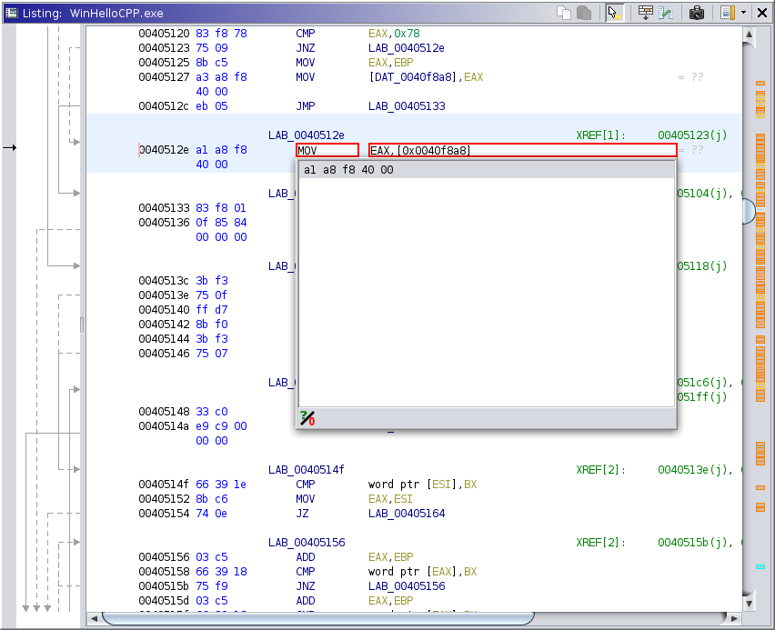

Assembly Editor
The Assembler plugin provides actions for modifying program bytes by inputing mnemonic assembly and data values.
There are three actions: One for blocks, one for single instructions, and one for data.
This action is available at any initialized memory address. It allows you to edit the current assembly instruction in the listing. The first time you use the action, it may take a moment to prepare the assembler for the current program's processor language. You can then edit the text of the instruction, optionally replacing it altogether. As you edit, a content assist will provide completion suggestions. When the text comprises a valid instruction, it will also display assembled byte sequences. Activating a suggestion will input that text at your cursor. Activating a byte sequence will finish the action, replacing the instruction at the current address. Pressing ESC or clicking outside of the assembly editor will cancel the action.
At times, the assembler will generate undefined bits. Typically, these bits are actually reserved, and so by default, the assembler fills them with 0s. The toggle below the content assist will cause the assembler to fill them will all possible patterns of 1s and 0s. This toggle should be used with care, since some languages may generate many undefined bits, and each bit grows the list by a factor of 2.
Ghidra's assembler is based on the same SLEIGH modeling that powers the disassembler. This offers some nice benefits:
Keep in mind, the above list is in an ideal world. The assembler essentially "solves" the disassembly routine for its input given a desired output. While the process works well in general, some languages require special attention. Thus, we periodically test our processor languages for assembly support and assign each a performance rating. The possible ratings are:
If the current processor scored anything less than Platinum you will receive a friendly warning reminding you what to expect.
This action is similar to Patch Instruction except that you can enter several instructions in a sequence. See Copy Assembly Code as a means of copying assembly passages from other parts of the program. The dialog is fairly straightfoward: You enter lines of assembly code in the top text area, and the table will display the tentative assembly result. The default columns are the Address and the Assembly, which display the starting address and assembly of each instruction. There are additional columns for diagnostics, including Bytes, Context, and Error. These display the resulting machine code bytes, the input (dis)assembly context, and if applicable, any errors encountered during assembly. When an error is encountered, the offending instruction's Assembly cell is rendered in red, and no further instructions are assembled.
This action is available at initialized memory addresses having a data unit with a type that provides an encoder. It allows you to edit the current data unit by typing its string representation. There is (currently) no content assist, and generally only primitive types and strings are supported. NOTE: Strings must be enclosed in double quotes, since that is how they are displayed in the listing. Pressing ENTER attempts to encode the data and place it at the current address. If this fails, the error is displayed in Ghidra's status bar, and the input fields remain on screen.
Provided by: Assembler plugin